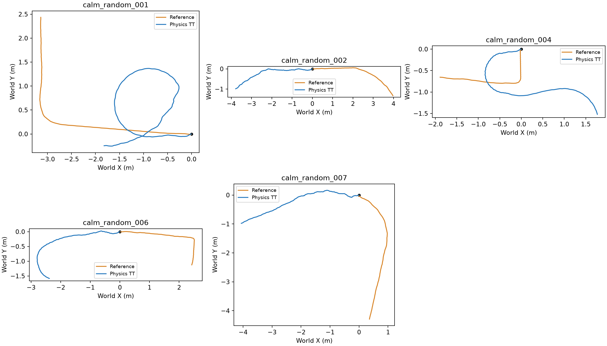
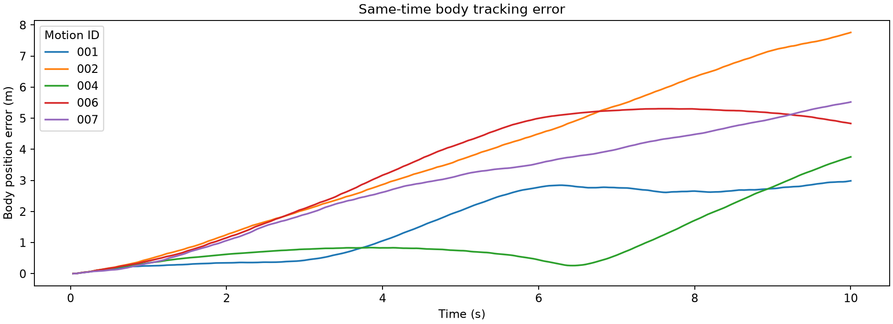

2026년 10월 29일 · MuJoCo CPU · 5개 레퍼런스 · 발 고정 보정 없음
계산으로 변환한 레퍼런스를 TT의 위치 PD 제어기로 실제 물리 시뮬레이션에서 따라가게 하고 생존·오차·접지 미끄러짐을 측정했다. 새 PPO 정책 학습은 하지 않았다. 몸통 궤적을 강제로 덮어쓰지 않고, 목표 관절각만 입력했다. 원본 30Hz 관절각은 각 제어 구간 동안 유지했으며 시간 보간은 하지 않았다.
TT e000/00000011, 치수 중간값 13개, 기존 TT PD 이득, 토크 한계 33.5N·m. 자기 충돌 끔·바닥 충돌 유지. 물리 계산은 300Hz로 제어 1회당 10회다. 첫 레퍼런스 자세와 차분 초기 속도에서 시작하며 높이를 추가 보정하거나 중간 초기화하지 않았다. 각 모션은 최대 10초, 몸통 위쪽 축의 수직 성분이 0.5 미만이면 전도로 종료했다. 전도는 30Hz 경계에서 검사하므로 시각 정밀도는 약 33ms다.
10초 생존: 5/5. 오차는 초기 상태를 제외하고 실행 종료까지 계산했다. 짧게 실행된 모션의 작은 오차를 완주한 모션보다 좋은 성능으로 해석하면 안 된다. 생존과 추종 정확도는 별도로 평가하며, 미끄러짐의 합격 기준은 아직 정하지 않았다.
| 모션 | 실행(s) | 생존 | 관절 RMSE(°) | 몸통 위치 RMSE(cm) | 발 월드 평균 오차(cm) | 자세 평균 오차(°) | 접지 미끄러짐(m/s) |
|---|---|---|---|---|---|---|---|
| calm_random_001 | 10.00 | 완주 | 11.12 | 199.62 | 168.76 | 63.21 | 0.33378798444949076 |
| calm_random_002 | 10.00 | 완주 | 11.83 | 445.80 | 373.72 | 31.65 | 0.27618024531906993 |
| calm_random_004 | 10.00 | 완주 | 10.35 | 143.16 | 112.59 | 105.13 | 0.18342295901747596 |
| calm_random_006 | 10.00 | 완주 | 11.30 | 391.46 | 342.87 | 47.40 | 0.24159649575660472 |
| calm_random_007 | 10.00 | 완주 | 12.20 | 333.53 | 289.34 | 87.04 | 0.3488763159769978 |
관절 RMSE는 모든 관절·평가 상태의 제곱 평균 제곱근이다. 몸통 위치는 같은 시각의 레퍼런스 대비 3차원 거리이며 발 오차는 월드 좌표계의 네 발 목표 대비 평균 거리다. 접지 미끄러짐은 실제 바닥 접촉에서 수직 힘이 0.001N을 넘는 발의 접촉점 수평 속도로 측정했다. 레퍼런스에 저장된 접촉 표시는 사용하지 않았으며, 접촉이 없는 구간은 평균에 넣지 않았다.
5개 모두 10초 생존했지만, 5개 모두 추종 오차 선별 기준에 미달했다. 관절 RMSE는 10.35~12.20°, 몸통 위치 RMSE는 1.43~4.46m, 실제 접지 미끄러짐 평균은 0.183~0.349m/s다.
관절 5°, 몸체 기준 발 위치 3cm, 자세 5°라는 기존 추종 기준값을 참고한 별도 오차 선별이다. 관절 지표는 이번 실험에서 전체 상태·관절에 대한 RMSE를 사용하므로 기존 평가기의 프레임별 RMS 평균과 집계 방식이 다르다. 위치 종료 오차·접지 일치율 등을 포함하는 원래 전체 평가와 동일한 판정은 아니다. 미끄러짐은 합격 기준 없이 측정값으로 제시한다.
| 모션 | 몸체 기준 발 평균 오차(cm) | 접지 미끄러짐 95백분위(m/s) | 실제 최대 토크(N·m) | 초기 바닥 관통(mm) | 오차 선별 |
|---|---|---|---|---|---|
| calm_random_001 | 5.90 | 1.569 | 17.59 | 0.99 | 미통과 |
| calm_random_002 | 6.47 | 1.144 | 19.64 | 0.85 | 미통과 |
| calm_random_004 | 5.28 | 1.075 | 16.53 | 0.93 | 미통과 |
| calm_random_006 | 5.87 | 1.124 | 19.80 | 0.78 | 미통과 |
| calm_random_007 | 6.75 | 1.511 | 19.89 | 0.00 | 미통과 |
몸체 기준 발 오차는 몸통 위치와 방향의 이탈을 제거한 후 네 발의 상대 위치를 비교한다. 초기 바닥 관통 약 1mm는 그대로 둔 조건이며 이번 생존 판정에서 별도로 탈락시키지 않았다. 최대 토크가 한계에 도달하지 않았다는 사실만으로 이득이나 토크가 충분했다고 단정할 수는 없다.


계산 단계에서 불일치 0%로 선별된 레퍼런스도, 기존 PD 제어기로 물리 실행하면 목표 자세·경로를 정확히 따라가지 못했다. 발 고정 보정 제거가 계산 지표를 개선했다는 사실과 실제 추종 성능 개선은 구분해야 한다. 다음에는 같은 30Hz 레퍼런스로 상태 피드백을 사용하는 추종 정책을 학습한 뒤 동일한 생존·오차·미끄러짐 지표로 비교하는 것이 적절하다. 이번 결과만으로 실패 원인을 레퍼런스 또는 PD 이득 하나로 확정하지 않는다.
파랑은 물리 시뮬레이션의 TT, 반투명 주황은 같은 시각의 TT 목표 자세다. 주황은 비교용 표시이며 충돌·힘을 발생시키지 않는다. 각 영상은 실제 종료 시점까지만 담았으며 저장 해상도 960×544, 30fps다. 영상 주소는 절대 경로다.
/home/cgr-ugrad-2026/quad_ws/codesign/runs/calm_pilot_tracking/try1/calm_random_001.mp4
/home/cgr-ugrad-2026/quad_ws/codesign/runs/calm_pilot_tracking/try1/calm_random_002.mp4
/home/cgr-ugrad-2026/quad_ws/codesign/runs/calm_pilot_tracking/try1/calm_random_004.mp4
/home/cgr-ugrad-2026/quad_ws/codesign/runs/calm_pilot_tracking/try1/calm_random_006.mp4
/home/cgr-ugrad-2026/quad_ws/codesign/runs/calm_pilot_tracking/try1/calm_random_007.mp4
이 결과는 레퍼런스를 고정된 PD 제어기로 재생한 기준 실험이다. 성공한 경우에도 PPO 학습 성공으로 해석하지 않으며, 실패한 경우에도 학습된 추종 정책으로 수행할 수 없다는 뜻은 아니다. 이득 조정·초기 상태·접촉·레퍼런스의 동적 일관성 중 원인을 확정하려면 조건을 하나씩 바꾼 후속 비교가 필요하다. 역동역학 선별 통과와 실제 동작 성공을 구분해야 한다.